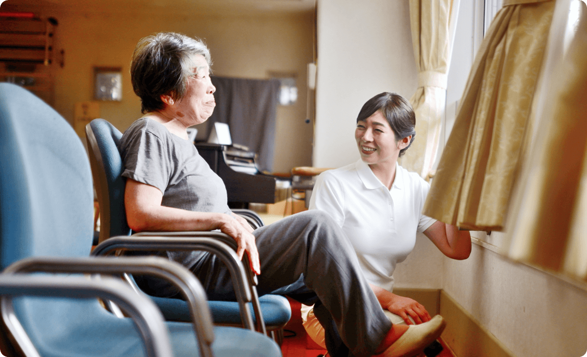
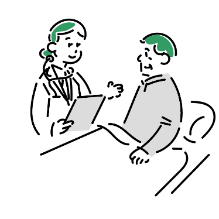

石井クリニックはこれからも 山形の皆様のかかりつけ医です
山形で治療し続けて30年
笑顔をお守りします
ここ山形の地で当院を開院し30年が経ちました。
皆様の笑顔を守る
お手伝いをさせていただきました。
いつも皆様のそばにある
”山形県民のかかりつけ医”として
これからも誠心誠意対応させていただきます。

治療内容
以下の検査項目以外でも、
まずはご相談頂けますと幸いです。
一般的な内科疾患
風邪、扁桃腺炎、発熱、胸痛、むくみ、
動悸、疲れ・疲労、だるい、体重減少、
立ちくらみ、嘔気、嘔吐、吐き気、胸焼け、
食欲不振・減退、肩こり、花粉症、蕁麻疹、
アレルギー性鼻炎など
循環器内科系疾患
狭心症、心筋梗塞、心不全、心臓弁膜症、
不整脈、大動脈瘤、心筋症、心臓発作、
動脈硬化症、急性冠動脈症候群など
消化器内科系疾患
腹痛、急性・慢性胃炎、胃痛、胃・
十二指腸潰瘍、下痢、便秘、逆流性食道炎、
過敏性腸症候群、食中毒、胃痙攣、胃下垂、
胃もたれ、心窩部（みぞおち）の痛み、
胆石症、急性・慢性肝炎、自己免疫性肝炎、
脂肪肝、B型肝炎、C型肝炎、肝硬変などvvv

お知らせ
-
2020.12.22
休診情報
- 2021年1月の休診日は5日、17日、27日となります。
-
2020.12.11
イベント
- 当院でクリスマスイベントを行います。南高校吹奏楽団をお呼びして、ロビーコンサートを開催予定です。
-
2020.12.01
採用
- 当院では臨床検査技師を募集しております。詳しい福利厚生についてご説明させていただきます。当院で働く…
-
2020.11.12
イベント
- ホームページをリニューアルしました。